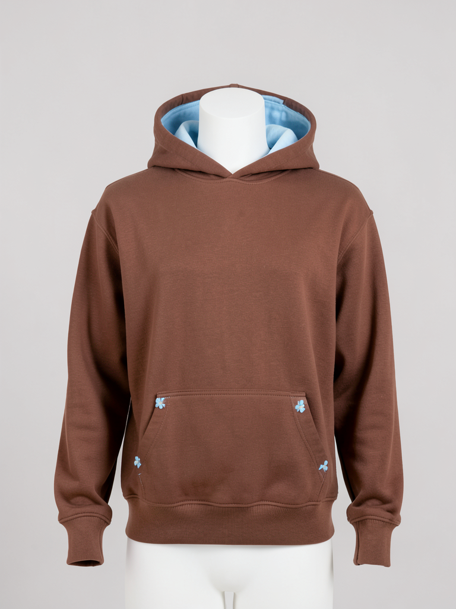
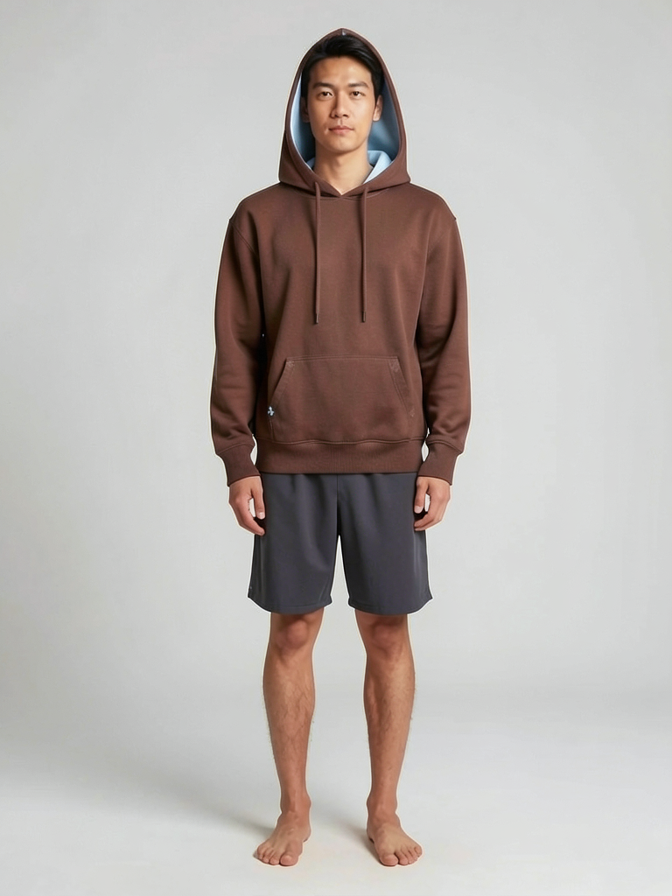
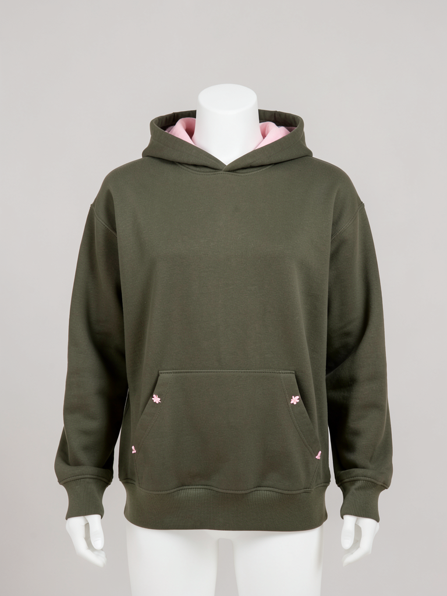
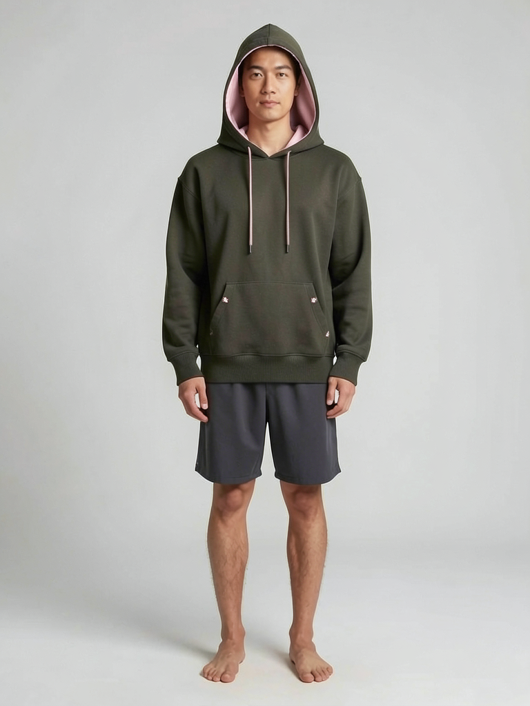
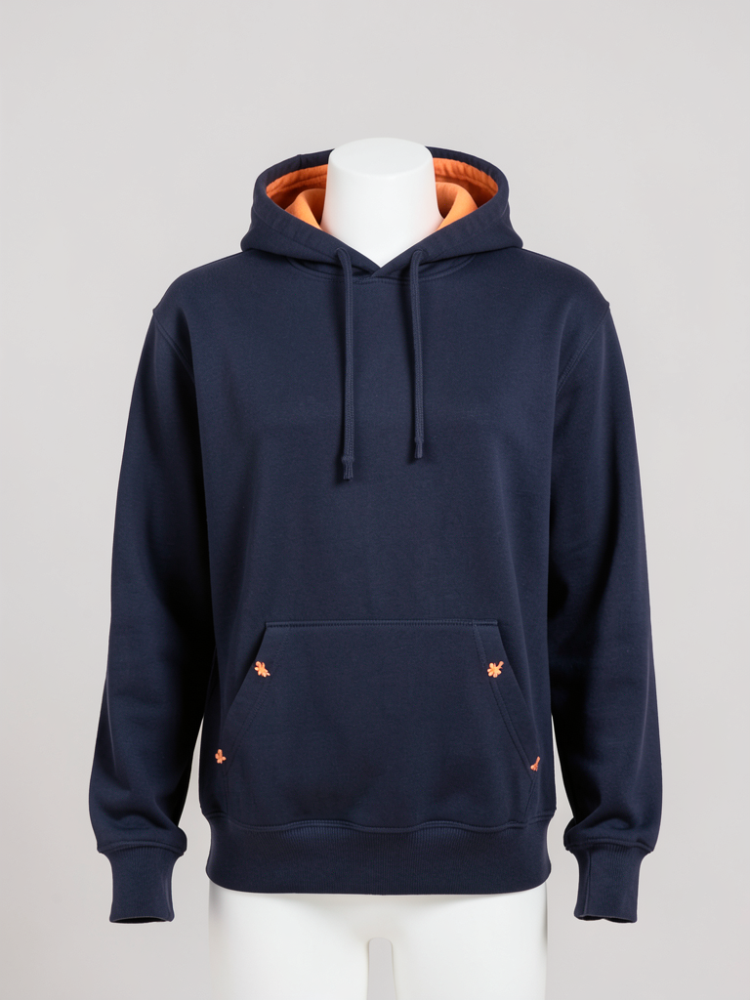
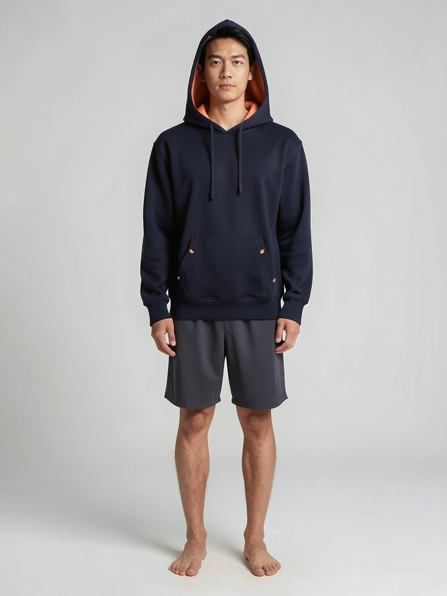
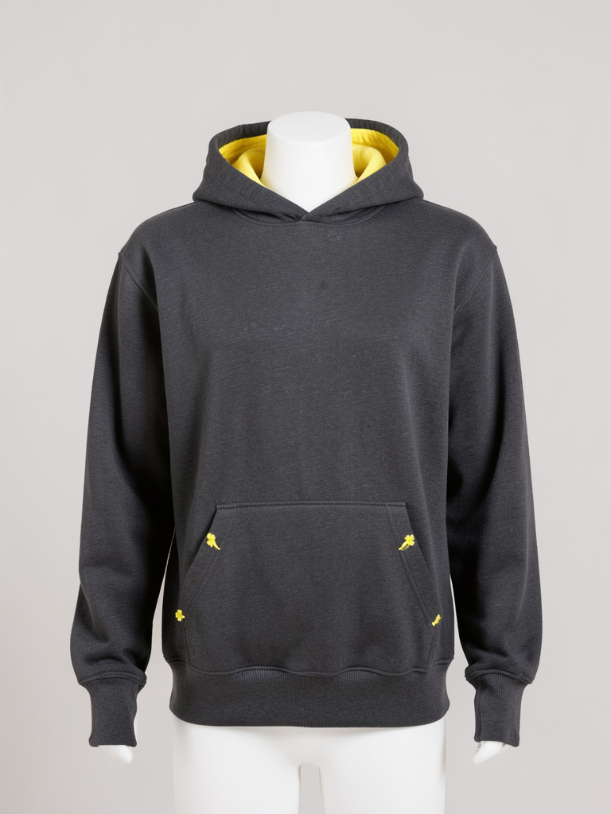
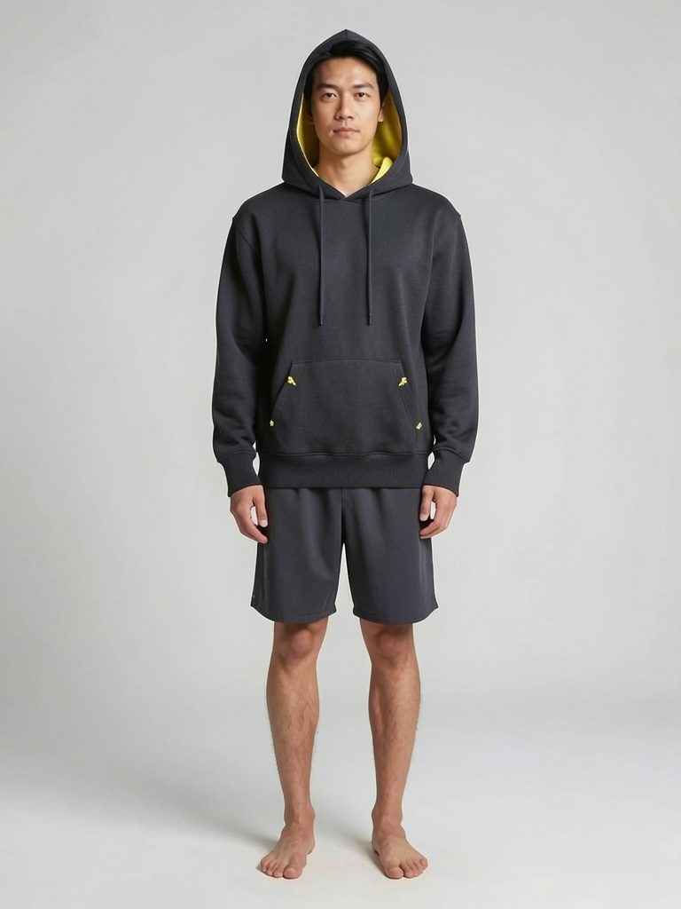

Chestnut × Sky
Outer fabric #5B3A29 · lining and bartack thread #A9CBE8


Target #5B3A29
Render #825445
ΔE00 10.9 Large difference
The brief defines colour names only. Hex values are a provisional interpretation and will be confirmed with swatches. Product shots were rendered with the same seed, changing only the colour, and on-model shots put those product shots on a synthetic person. The people in the on-model shots are not real (label them "Virtual model" when posting externally).
Outer fabric #5B3A29 · lining and bartack thread #A9CBE8


Outer fabric #4A4E2A · lining and bartack thread #F2C6CF


Outer fabric #1E2A44 · lining and bartack thread #F4B488


Outer fabric #2A2A2C · lining and bartack thread #F1E05A

